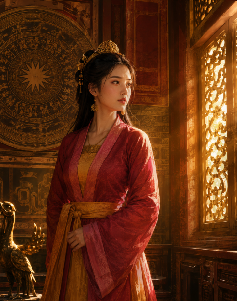
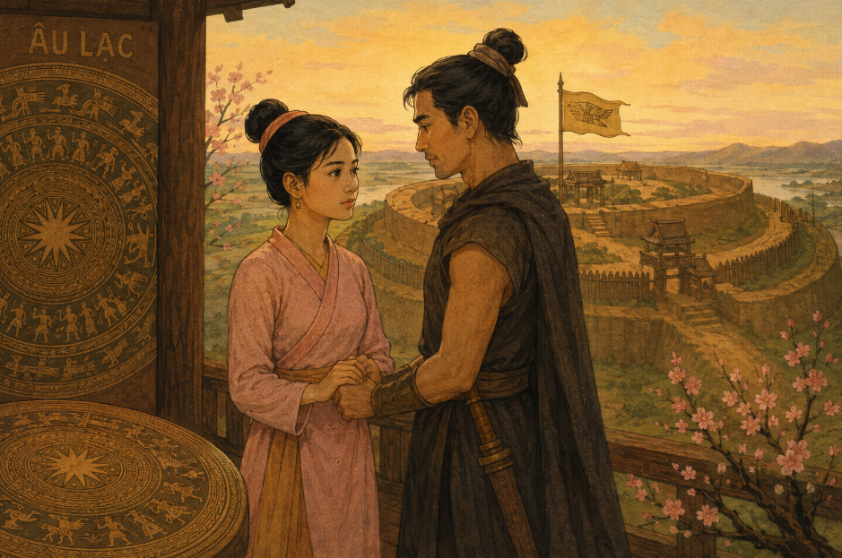
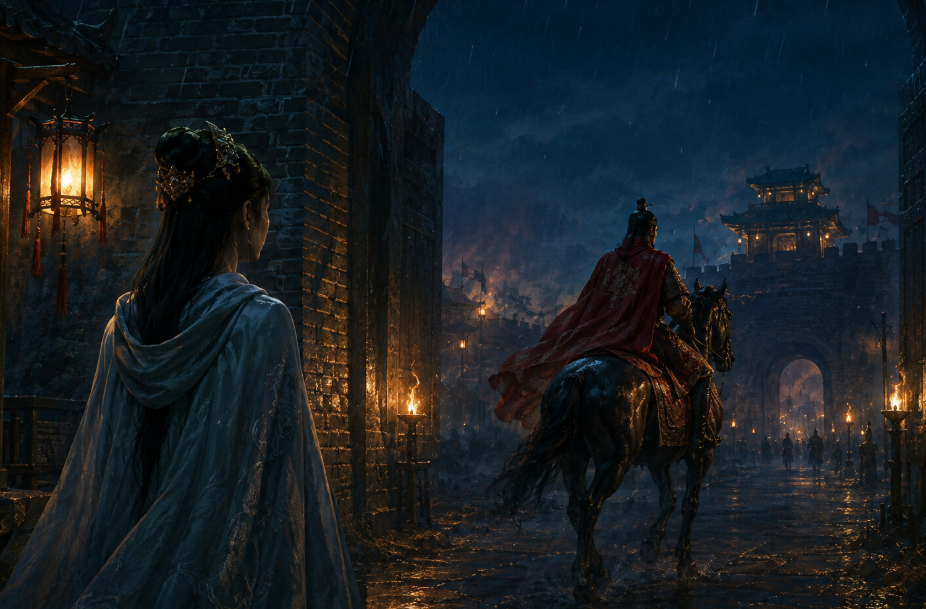
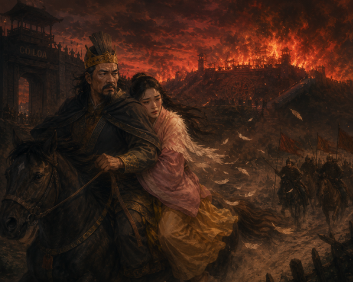
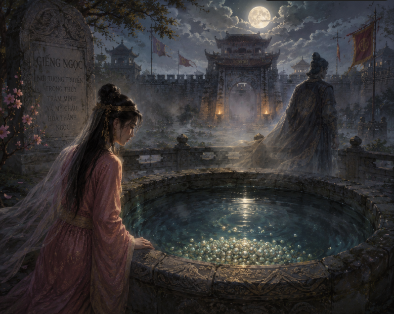

Hậu sinh khả uý — hãy suy nghĩ kỹ trước khi quyết định!
Liên tiếp đúng!
🔥 COMBO x2
+điểm thưởng!
🔥
Streak
0
🏆 Bảng Xếp Hạng
✕
Đang tải...
Điểm
0
Danh hiệu
—
Trái Tim
❤️❤️❤️
🦪
Sử Việt Tương Tác
MỴ CHÂU Tình Yêu Hay Phản Bội
~215 — 179 TCN · Công Chúa Duy Nhất Của Âu Lạc
Ngươi là Mỵ Châu — công chúa lớn lên trong thành Cổ Loa kiên cố, nơi cha nàng cất giữ nỏ thần bách phát bách trúng. Từ cuộc hôn nhân chính trị với Trọng Thủy, những câu hỏi vô tình về bí mật quốc gia, đến đêm biệt ly định mệnh và con đường rắc lông ngỗng dẫn đến diệt vong — một hành trình 5 chương về ranh giới mong manh giữa tình yêu và trách nhiệm.
🦪 5 chương🎓 Kiến thức + Suy ngẫm📖 Có nguồn tham khảo
▾ hoặc cuộn xuống
🕊️ Chương 1 · Thiếu Nữ Thành Cổ Loa 📖 nguồn

✓
257 TCN
Dựng nước Âu Lạc
✓
~250 TCN
Thành Cổ Loa
3
~210 TCN
Trọng Thủy đến
4
179 TCN
Bi kịch
👑 Nhân vậtMỵ Châu là con gái duy nhất của An Dương Vương. Nàng lớn lên trong thành Cổ Loa vững chắc, được cha yêu thương hết mực. Cuộc đời nàng gắn với chiếc nỏ thần và bí mật quốc gia.
Ngươi là Mỵ Châu — công chúa duy nhất của nước Âu Lạc. Từ nhỏ ngươi lớn lên trong những vòng thành Cổ Loa kiên cố. Cha ngươi — An Dương Vương — nắm giữ nỏ thần Kim Quy bách phát bách trúng, không kẻ thù nào dám bén mảng.
Một buổi sáng xuân, Triệu Đà — vua phương Bắc từng nhiều lần bại trận trước nỏ thần — sai sứ giả mang lễ vật đến thành Cổ Loa...
Sứ giả Triệu Đà — dâng thư
"Triệu vương ngưỡng mộ danh tiếng An Dương Vương đã lâu. Nay muốn kết thông gia — con trai ta là Trọng Thủy muốn xin hỏi cưới công chúa Mỵ Châu. Hai nước cùng yên — muôn dân hạnh phúc..."
👑 Bổn phận con gái⚠️ Linh cảm lo âu🕊️ Tò mò về tình yêu
🎓 Kiểm tra kiến thức
Tại sao Triệu Đà không tiếp tục dùng sức mạnh quân sự tấn công Âu Lạc mà chuyển sang "hôn nhân chính trị"?
💭 Khi cha hỏi ý kiến, Mỵ Châu nói...
📍 Lựa chọn A · Cảnh Giác
💭Mỵ Châu nói ra tiếng lòng! Nhưng An Dương Vương đã tin rằng nỏ thần đủ bảo vệ đất nước — ông đồng ý kết thông gia dù con gái phản đối. Đây là quyết định của vua cha, không phải của nàng.
Cha ngươi ngồi im, gật đầu nhẹ: "Con gái, cha hiểu lòng con. Nhưng nỏ thần Kim Quy trong tay ta — không kẻ thù nào dám làm gì. Kết thông gia sẽ giúp hai nước tránh chiến tranh..." Mỵ Châu cúi đầu. Lòng nàng nặng trĩu.
⚡ Tiếp tục...
📍 Lựa chọn B · Tuân Theo
😔
Im lặng không phải đức hạnh trong trường hợp này. Mỵ Châu đã không nói lên linh cảm của mình — và điều đó sẽ trở thành một trong những hối tiếc lớn nhất của nàng.
⚡ Vâng lời cha...
⭐ Lựa chọn C · Khôn Ngoan
🌸Điều kiện đặt ra — nhưng... An Dương Vương gật đầu. Nỏ thần sẽ được cất giữ kỹ. Mỵ Châu hiểu rằng tình cảm và bí mật quốc gia là hai điều riêng biệt.
💡 Nếu lịch sử khác đi...
Nếu Mỵ Châu đặt điều kiện và được cha chấp thuận — có thể nỏ thần không bị lộ bí mật. Nhưng trong thực tế, tình yêu đã khiến nàng quên đi ranh giới đó.
⚡ Trọng Thủy đến...
🌸 Chương 2 · Trọng Thủy Đến Thành Cổ Loa 📖 nguồn

✓
257 TCN
Dựng nước
✓
~250 TCN
Thành Cổ Loa
3
~210 TCN
Tình yêu & Nỏ thần
4
179 TCN
Bi kịch
🔍 Phân tích
Trọng Thủy được cha sai đến với nhiệm vụ bí mật: tìm hiểu và đánh cắp bí mật nỏ thần Kim Quy. Nhưng có thể... chính anh cũng không ngờ mình sẽ thực sự yêu Mỵ Châu.
Trọng Thủy đến Thành Cổ Loa làm lễ thành hôn với ngươi. Chàng điển trai, lịch thiệp, nói chuyện uyên bác. Những ngày đầu, ngươi dè dặt và giữ khoảng cách. Nhưng dần dần...
Một buổi chiều dạo trong vườn thượng uyển, Trọng Thủy hỏi nhẹ:
Trọng Thủy — giọng thì thầm
"Nàng có vẻ buồn... Cha nàng thường canh giữ kho vũ khí rất nghiêm. Nàng có... được vào đó không? Tôi chỉ tò mò — nghe nói có nỏ thần kỳ diệu lắm..."
💕 Tim đập nhanh hơn⚠️ Câu hỏi lạ...
🎓 Kiểm tra kiến thức
Nỏ thần của An Dương Vương đặc biệt như thế nào so với nỏ thông thường?
💭 Trước câu hỏi của Trọng Thủy, Mỵ Châu...
⭐ Lựa chọn A · Trách Nhiệm
🛡️Mỵ Châu đặt đất nước lên trên! Nàng mỉm cười nhẹ: "Chuyện vũ khí là chuyện của cha thiếp — thiếp không được phép bàn đến. Nào, chàng có muốn thăm vườn hoa không?"
💡 Nếu lịch sử khác đi...
Đây là điều Mỵ Châu lẽ ra phải làm. Bí mật quốc gia không thể chia sẻ — dù với người thân yêu nhất.
🏹 Nỏ thần được bảo vệ🌸 Tình yêu trong sáng
⚡ Nhưng Trọng Thủy tiếp tục tìm cách...
💔 Lựa chọn B · Trao Trọn Tin Tưởng
😢Đây là khoảnh khắc định mệnh. Mỵ Châu dẫn Trọng Thủy vào kho vũ khí trong một đêm khuya. Nàng không biết rằng đêm ấy, Trọng Thủy đã cẩn thận quan sát cơ cấu chiếc lẫy nỏ bằng móng vuốt Kim Quy — bí mật của cả nước Âu Lạc.
Đêm hôm sau, Trọng Thủy mò mẫm vào kho vũ khí một mình — lấy chiếc lẫy nỏ thần ra, tỉ mỉ chế ra một chiếc lẫy giả giống hệt, rồi đổi lại...
💭 Suy ngẫm (không chấm điểm)
Mỵ Châu không hề "phản bội" đất nước một cách chủ ý — nàng chỉ tin tưởng người mình yêu. Vậy tội của nàng, nếu có, có nên bị đánh giá như một hành vi phản quốc có chủ đích không?
Không có đáp án đúng/sai — đây chính là câu hỏi mà văn học Việt Nam vẫn còn tranh luận đến ngày nay.
Đây chỉ là một giả định — trong truyền thuyết, Mỵ Châu tin chồng tuyệt đối. Nhưng nếu nàng làm vậy, rất có thể Trọng Thủy sẽ tìm cách khác để tiếp cận bí mật, hoặc Triệu Đà sẽ quay lại dùng vũ lực. Truyền thuyết không kể điều này xảy ra — nhưng nó cho thấy bi kịch không chỉ nằm ở một quyết định, mà ở cả một thế cờ chính trị Mỵ Châu không hề hay biết mình đang là quân cờ.
⚡ Bí mật nỏ thần đã bị lộ...
📍 Lựa chọn C · Dò Hỏi
🤔
Trọng Thủy cười nhẹ: "Chỉ tò mò thôi... nghe nói thần kỳ lắm." Mỵ Châu nghi ngờ nhưng tình cảm đang lớn dần trong lòng nàng. Dần dần, trong nhiều tháng, nàng vô tình tiết lộ đủ thứ về nơi cất giữ nỏ thần.
💡 Bài học
Kẻ thù không cần hỏi thẳng — chỉ cần kiên nhẫn. Từng mảnh thông tin nhỏ, theo thời gian, có thể tạo thành bức tranh đầy đủ.
⚡ Bí mật dần bị lộ...
🌧️ Chương 3 · Đêm Biệt Ly 📖 nguồn

✓
257 TCN
Dựng nước
✓
~250 TCN
Thành Cổ Loa
✓
~210 TCN
Tình yêu & Nỏ thần
4
179 TCN
Bi kịch
Một ngày đông lạnh, Trọng Thủy nói với Mỵ Châu rằng chàng phải về thăm cha già đang bệnh. "Ta sẽ trở lại..." — giọng chàng trầm và xa vắng. Điều nàng không biết là trong đêm đó, chàng đã đánh tráo lẫy nỏ thần bằng chiếc lẫy giả.
Trọng Thủy — lúc chia tay
"Nếu sau này tình hình hỗn loạn, nàng hãy để lại dấu vết cho ta tìm. Ta sẽ đến tìm nàng bất kể ở đâu..."
Mỵ Châu nhìn theo bóng ngựa khuất dần trong đêm tối. Lòng nàng ấm áp vì lời hứa đó. Nàng nhìn xuống chiếc áo lông ngỗng đang khoác trên vai...
🎓 Kiểm tra kiến thức
Câu nói "để lại dấu vết cho ta tìm" của Trọng Thủy — về sau Mỵ Châu đã làm gì theo lời đó?
💭 Trước khi Trọng Thủy đi, Mỵ Châu nên...
⭐ Lựa chọn A · Dũng Cảm Đối Mặt
💪Mỵ Châu hỏi thẳng:"Chàng... năm xưa hỏi về nỏ thần — chàng muốn gì thật sự?" Khoảnh khắc im lặng dài. Trọng Thủy cúi đầu. Không trả lời. Và Mỵ Châu nhận ra sự thật.
Nàng chạy vào báo cha ngay đêm đó. An Dương Vương kiểm tra nỏ thần — và phát hiện lẫy nỏ đã bị đánh tráo. Nhưng đã quá muộn — Triệu Đà đã biết bí mật...
⚡ Số phận đã an bài...
💔 Lựa chọn B · Tin Tưởng Đến Cùng
🌧️
Mỵ Châu tin. Nàng tin bằng cả trái tim. Và đó chính là bi kịch. Tình yêu đôi khi làm mờ đi phán đoán — ngay cả khi dấu hiệu đã rõ ràng.
⚡ Năm 179 TCN đến...
📍 Lựa chọn C · Kiểm Tra Nỏ Thần
🏹
Mỵ Châu vào kho vũ khí — nhưng nàng không biết cách nhận ra lẫy giả. Chiếc lẫy mới trông giống hệt chiếc lẫy thật. Nàng ra về yên tâm... mà không hay biết.
💡 Bài học kỹ thuật
Đây là sự tinh vi của mưu kế Trọng Thủy — chiếc lẫy giả được chế tác rất giống thật. Chỉ khi thực sự bắn mới biết nỏ thần đã mất linh.
⚡ Số phận tiếp tục...
💔 Chương 4 · Đường Trốn Và Lông Ngỗng 📖 nguồn

⚔️ Thế trận sụp đổ
Năm 179 TCN, Triệu Đà tổng tấn công. An Dương Vương dùng nỏ thần bắn — nhưng mũi tên không còn thần lực. Thành Cổ Loa thất thủ trong một đêm. Nước Âu Lạc tồn tại 80 năm (257–179 TCN) chính thức sụp đổ.
Cha ngươi ôm ngươi lên lưng ngựa, tháo chạy về phương Nam. Tiếng vó ngựa kẻ thù vang theo phía sau. Ngươi nhớ lời Trọng Thủy: "Hãy để lại dấu vết cho ta tìm..."
Tay ngươi run run chạm vào chiếc áo lông ngỗng. Và ngươi bắt đầu rắc từng chiếc lông xuống đường...
💭 Suy ngẫm (không chấm điểm)
Mỵ Châu rắc lông ngỗng vì tin rằng đó là cách để người mình yêu tìm đến cứu mình — nàng hoàn toàn không biết đó là dấu vết dẫn đường cho quân địch. Một hành động xuất phát từ lòng tin trọn vẹn lại trở thành nguyên nhân mất nước — điều đó nói lên điều gì về ranh giới giữa tình yêu và trách nhiệm?
Không có đáp án đúng/sai — đây là câu hỏi mở đã được tranh luận suốt hàng nghìn năm.
Đây là một giả định — trong truyền thuyết, Mỵ Châu tin lời dặn của Trọng Thủy và đã rắc lông ngỗng suốt đường chạy. Nếu nàng không làm vậy, có lẽ quân Triệu Đà đã khó lòng truy đuổi kịp hai cha con. Nhưng bí mật nỏ thần đã bị đánh tráo từ trước — thất bại quân sự gần như là điều không thể tránh khỏi, chỉ là chưa biết sẽ đến vào lúc nào.
Thần Kim Quy — vọt lên từ mặt nước
"Kẻ thù đang ngồi sau lưng nhà ngươi đó! An Dương Vương — người ngươi đang che chở chính là nguồn cơn của đại họa!"
🎓 Kiểm tra kiến thức
Sau khi nghe lời thần Kim Quy, An Dương Vương đã làm gì với Mỵ Châu?
💭 Là Mỵ Châu — trong khoảnh khắc cuối cùng đó, nàng muốn nói điều gì với cha?
🌸 Lựa chọn A · Nhận Lỗi
🌸"Thôi con ơi — cha biết con không cố ý. Nhưng nước đã mất rồi..." An Dương Vương nhìn con lần cuối với ánh mắt đau đớn và thương yêu lẫn lộn.
⚡ Kết thúc bi thương...
⭐ Lựa chọn B · Bi Kịch Không Lối Thoát
💔
Đây chính là trái tim của câu chuyện. Mỵ Châu không phải ác nhân đơn thuần — nàng bị kẹp giữa tình yêu và bổn phận, và không thể cứu vãn cả hai. Bi kịch sâu sắc nhất là khi con người tốt bụng bị đặt vào hoàn cảnh không thể giữ trọn vẹn.
🌟 Góc nhìn học giả
Nhiều nhà nghiên cứu lịch sử Việt Nam cho rằng câu chuyện Mỵ Châu không đơn thuần là tội lỗi hay vô tội — mà là bài học về sự phức tạp của con người khi đối diện với xung đột giữa tình yêu và trách nhiệm quốc gia.
⚡ Xem ý nghĩa lịch sử...
📍 Lựa chọn C · Tự Bào Chữa
💭
Dù Mỵ Châu là nạn nhân của âm mưu — hậu quả vẫn xảy ra như nhau. Lịch sử không xét xử dựa trên ý định, mà dựa trên kết quả. Đây là bài học khắc nghiệt nhất mà câu chuyện muốn nói.
⚡ Suy ngẫm về bài học...
🌊 Chương 5 · Huyền Thoại Ngọc Trai 📖 nguồn

An Dương Vương rút kiếm — khoảnh khắc ngắn ngủi nhất và đau đớn nhất trong lịch sử. Sau đó, ông cầm sừng tê giác của thần Kim Quy, bước xuống biển mà không nhìn lại.
🦪
"Máu Mỵ Châu chảy xuống biển — trai sò ăn vào đều hóa thành ngọc trai. Người đời sau muốn ngọc trai sáng trong hơn, lấy nước giếng Cổ Loa mà rửa — giếng nơi Trọng Thủy gieo mình xuống vì ân hận..."
— Truyền thuyết ngàn năm của người Việt
Trọng Thủy quay trở lại thành Cổ Loa — tìm Mỵ Châu, chỉ thấy áo lông ngỗng đẫm máu. Sự ân hận và đau đớn khiến chàng lao đầu xuống giếng thành Cổ Loa mà chết. Người đời sau gọi đó là Giếng Ngọc.
🎓 Kiểm tra kiến thức
Tại sao câu chuyện Mỵ Châu - Trọng Thủy được coi là bi kịch chứ không đơn thuần là tội ác?
💭 Bài học nào bạn rút ra từ câu chuyện Mỵ Châu?
🦪
Hành Trình Hoàn Thành!
0
—
...
📔 NHẬT KÝ HÀNH TRÌNH CỦA BẠN
📚 Bài học từ Mỵ Châu
Câu chuyện Mỵ Châu không phải chỉ về một cô gái yêu lầm người — mà về những xung đột không có đáp án đơn giản trong cuộc sống.
1. Tình yêu không thể bào chữa cho hậu quả: Dù Mỵ Châu không cố ý, đất nước vẫn mất. Trách nhiệm không tùy thuộc vào ý định.
2. Bí mật quốc gia là thiêng liêng: Dù với người thân yêu nhất — một số điều không thể chia sẻ. Đây là ranh giới giữa tình cảm cá nhân và trách nhiệm cộng đồng.
3. Mỵ Châu không phải ác nhân: Nàng là biểu tượng của bi kịch con người — đặt trong hoàn cảnh không thể giữ trọn vẹn cả tình yêu lẫn bổn phận.
Các sự kiện, mốc thời gian trong trang này dựa trên chính sử và truyền thuyết dân gian đã được ghi chép. Các đoạn hội thoại và diễn biến tình cảm giữa nhân vật (đánh dấu 🔵 truyền thuyết) là dựng lại minh họa theo tinh thần truyền thuyết, không phải nguyên văn ghi chép cổ sử — bấm "📖 nguồn" ở mỗi chương hoặc nút 📚 trên thanh điều hướng để xem trích dẫn cụ thể.
Tài liệu tham khảo
Đại Việt Sử Ký Toàn Thư — Ngô Sĩ Liên (Kỷ Thục)
Lĩnh Nam Chích Quái — Trần Thế Pháp (truyện "Rùa Vàng": An Dương Vương, Mỵ Châu — Trọng Thủy)
Việt Điện U Linh — Lý Tế Xuyên
Khu di tích Cổ Loa — Ban Quản lý Khu di tích Cổ Loa, Đông Anh, Hà Nội
Ghi chú về phương pháp thể hiện
Mốc thời gian, kết quả sự kiện chính (hôn nhân chính trị, đánh tráo lẫy nỏ, mất nước năm 179 TCN): dựa trên chính sử đã ghi chép
Hội thoại, nội tâm, diễn biến tình cảm giữa Mỵ Châu và Trọng Thủy: dựng lại nhằm mục đích minh họa, giúp hình dung bối cảnh — không phải trích dẫn nguyên văn
Câu chuyện Mỵ Châu — Trọng Thủy thuộc thể loại truyền thuyết: pha trộn giữa sự kiện lịch sử có thật (hôn nhân Âu Lạc — Nam Việt, mất nước năm 179 TCN) và yếu tố huyền thoại (thần Kim Quy, ngọc trai — giếng nước)
📚 Nguồn Tham Khảo
Các mục đánh dấu 🔵 Truyền thuyết mang tính biểu tượng, không phải sự kiện lịch sử có ghi chép xác thực; các hội thoại giữa nhân vật đều là dựng lại minh họa.